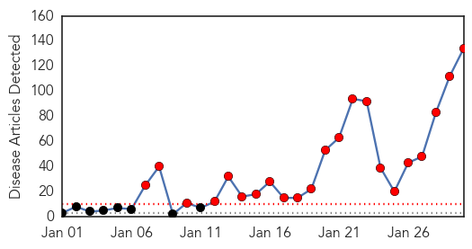
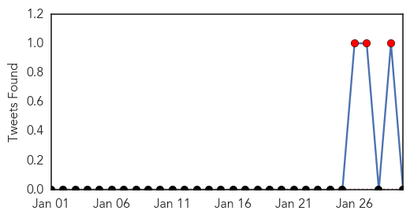
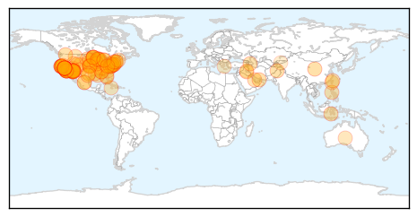
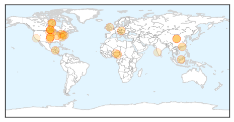

Measles
30-Day Web Trend
22 alerts, 0 warnings

30-Day Twitter Trend
3 alerts, 0 warnings

Article Locations
Article Confidences

Top Articles:
- 0.999
- Scared of Ebola? This Measles Outbreak is Far More Dangerous.
- 0.998
- U.S. Measles Outbreak Now Numbers 87 Cases
- 0.997
- SGGP English Edition- Ministry warns risk of H7N9 spread
- 0.995
- No measles in Virginia this year
- 0.994
- Disneyland Measles Outbreak Infects 94, Mostly Unvaccinated
- 0.994
- Arizona officials say nearly 1,000 people may have been exposed
- 0.994
- Arizona officials say nearly 1,000 people may have been exposed
- 0.994
- Measles outbreak exposes holes in vaccine coverage
- 0.990
- US faces largest measles outbreak in 20 years
- 0.989
- Measles Cases Mount; White House Urges Vaccinations
- 0.984
- Delaware confirms first measles case since 2012
- 0.983
- Health officials watching more than 1,000 for measles
- 0.981
- Metro Health urging all to protect against measles
- 0.980
- More measles cases seen in January than in typical year
- 0.978
- More Measles Cases Seen in January Than in Typical Year
- 0.977
- 1,000 people monitored for possible measles in Arizona ahead of Super Bowl
- 0.977
- 1,000 people monitored for possible measles in Arizona ahead of Super Bowl
- 0.976
- The Disneyland Measles Outbreak: What Does It Mean?
- 0.974
- La. health officials monitoring West Coast measles outbreak
- 0.972
- Increase in Vaccine Exemptions in New Mexico
- 0.972
- Lexington Clipper-Herald : Local News
- 0.970
- CDC says Disney measles outbreak came from overseas
- 0.969
- More than 100 cases of measles now confirmed in U.S
- 0.967
- Measles cases in California soar
- 0.966
- CDC says measles vaccination is key to prevention
- 0.966
- More measles cases seen in January than in typical year
- 0.966
- Utah physician discusses measles outbreak, offers information on immunization
- 0.965
- Measles Is A Killer: It Took 145,000 Lives Worldwide Last Year
- 0.964
- State to offer free measle shots in Franklin, Cumberland counties
- 0.963
- Measles Confirmed In 11 States
- 0.963
- Measles cases in California up 54% in one week
- 0.963
- Rise In Measles Cases Marks A 'Wake-Up Call' For U.S.
- 0.961
- Rise in measles cases marks a 'wake-up call' for U.S.
- 0.960
- As Measles Spreads, Kansans Urged To Take Precautions
- 0.959
- CDC warning travelers of measles risk in China, US
- 0.958
- Is the Measles Outbreak Reaching Epidemic Proportions?
- 0.958
- California Measles Outbreak Grows
- 0.956
- Measles Makes Comeback, Northland Medical Experts on Alert
- 0.953
- Measles case reported in New York State
- 0.951
- Autism Fear Not the Only Reason Kids Aren't Vaccinated Against Measles
- 0.943
- Arizona monitoring hundreds for measles linked to Disneyland
- 0.942
- KSLA News 12 Shreveport, Louisiana News Weather & Sports
- 0.941
- Health Departments Warn Residents About Dangers of Measles
- 0.941
- Concerns grow across country over measles outbreak
- 0.940
- Case of measles confirmed in D.C. as vaccination concerns rise
- 0.940
- With hundreds exposed to measles, health officials urge Arizonans to take precautions – Cronkite News
- 0.939
- Measles cases preventable
- 0.935
- White House urges parents to heed advice urging childhood vaccines
- 0.925
- How to protect yourself against the measles outbreak
- 0.923
- Measles Outbreak Stirs Concern Among U.S. Health Officials
Showing top 50 articles...
Top Tweets:
-
No tweets found for Jan 30, 2015
Influenza
30-Day Web Trend
0 alerts, 0 warnings

30-Day Twitter Trend
0 alerts, 0 warnings

Article Locations
Article Confidences

Top Articles:
- 1.000
- FluWatch report: January 18 to January 24, 2015 (Week 3)
- 0.999
- Minnesota reports ‘swine flu’ H1N1v case
- 0.997
- Public Health Notice Update: H7N9 avian flu
- 0.996
- Indiana reports highest number of flu-related deaths in a decade
- 0.996
- 58 Oklahomans have died from flu this season
- 0.996
- 1,035 people hospitalized and 56 have died of flu this season in Toronto
- 0.995
- Austria 'on threshold of flu outbreak'
- 0.994
- Flu Scan for Jan 30, 2015
- 0.993
- Second H7N9 bird flu case confirmed in B.C.; husband of first patient
- 0.992
- Second bird flu case confirmed in B.C.
- 0.992
- Husband of woman diagnosed with H7N9 bird flu confirmed as second case
- 0.992
- 52 flu-related deaths in Alberta so far this season
- 0.989
- Canada's Flu Vaccine Didn't Work Very Well This Year
- 0.986
- No H3N2 flu vaccine available until April as Hong Kong death toll jumps to 81
- 0.986
- The Reporter Newspaper – BAHA seizes $600,000 worth of breeder hens to contain bird flu outbreak at Spanish Lookout
- 0.979
- Halting the spread of bird flu
- 0.950
- Influenza: the mother of all mild respiratory infections
- 0.924
- Officials: Flu numbers have tripled in Cayuga County
- 0.912
- Tamiflu Cuts 1 Day Off Average Flu Bout, Study Finds
- 0.820
- Flu toll reaches 108 as it continues to claim lives in Indiana
- 0.805
- H5N1 bird flu strikes 12th Nigerian State
- 0.790
- This year’s flu shot won’t help you
- 0.750
- JRMC visitation restrictions lifted
- 0.616
- Canada reports 2nd H7N9 avian flu case
- 0.558
- India, Bangladesh’s scientists agree to share information on infectious disease
- 0.525
- Nevada confirms avian flu case
Top Tweets:
- 0.659
- flu season in Europe, early vaccine effectiveness estimates from Canada & more on influenza: http://t.co/rfsEKMuciK